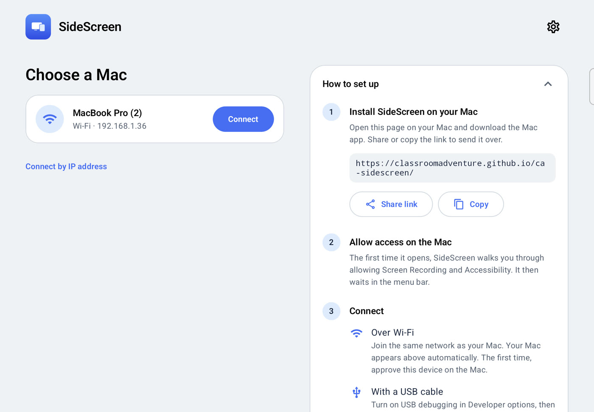
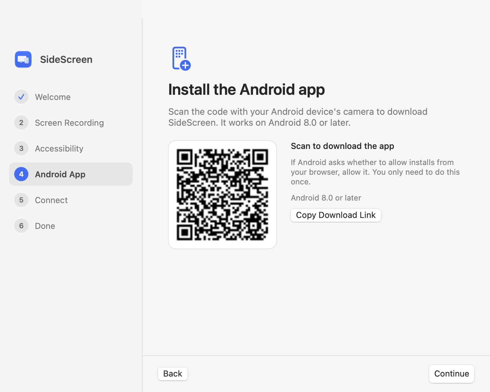
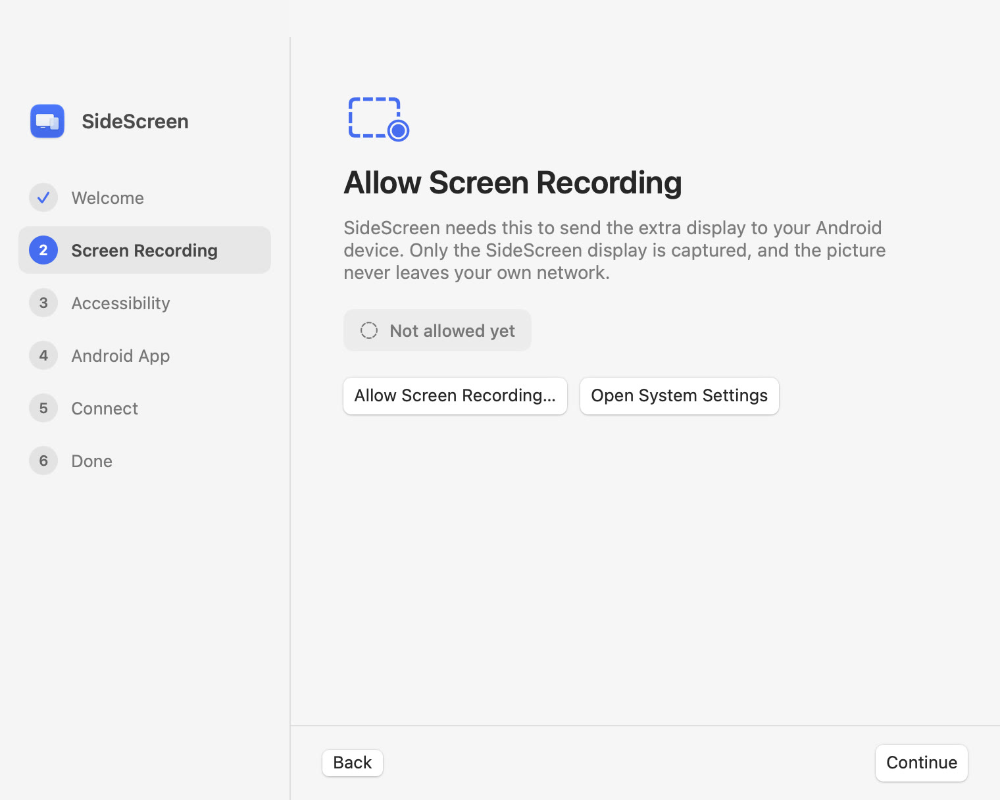
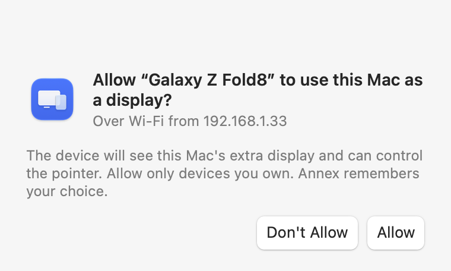
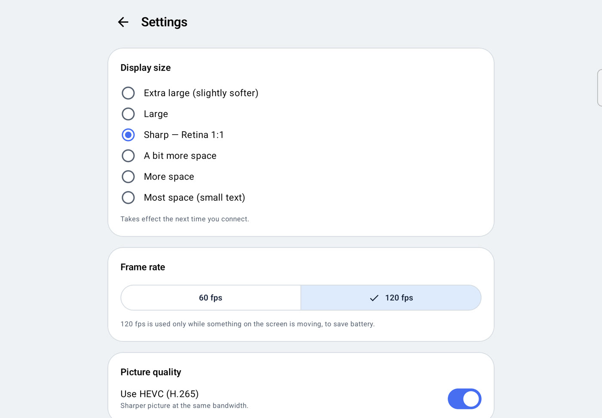

Your Android, as a second monitor for your Mac.
Annex is a free app that turns an Android phone, tablet or foldable into an extended display for your Mac — like Sidecar, but for Android. Connect over Wi-Fi or with a USB cable, drag windows across, and use touch or a stylus to click and scroll.
Free and open source (MIT). macOS 14 or later, Android 8.0 or later.
- Your Android device becomes the Mac's second screen
- Drag windows across, like any monitor
- Tap and scroll with your fingers
Stay on Wi-Fi, or plug in
Both paths give you the same display. Pick whichever is at hand; you can switch any time.
Same Wi-Fi
~16ms
from capture to screen
Your Mac shows up in the app automatically. Video travels over UDP with built-in loss repair, and the quality adjusts to your network as it changes.
USB cable
~20ms
from capture to screen
Connect the cable and Annex starts on its own. Your device charges while you work. Needs USB debugging on the device and Android platform tools on the Mac.
| Capture + encode | Network | Decode | Total | |
|---|---|---|---|---|
| Wi-Fi | 7 ms | 5 ms | 3 ms | 16 ms |
| USB | 7 ms | 10 ms | 3 ms | 20 ms |
Measured on a Galaxy Z Fold with an M4 Pro MacBook Pro while the screen was moving. Tap with three fingers to see the numbers on your own setup.
Feels like a real display
macOS treats your device as a monitor of its own, so everything you already know about displays just works.
- The pointer keeps up with your finger
- The cursor is drawn on the device itself, so it moves the instant you touch — no waiting for the video to catch up.
- Retina sharp
- Rendered at your device's native resolution. Choose a larger size for comfortable reading, or more space for more windows.
- Made for foldables
- Fold, unfold or rotate the device and the Mac display resizes to match, without reconnecting.
- Touch and stylus
- Tap to click, drag to select, two fingers to scroll with momentum. A stylus can hover to move the pointer.
- Smooth when it moves, calm when it doesn't
- Up to 120 Hz on supported screens, only while something is changing. When the screen is still, the device can drop back to save battery.
- Any Android device
- Phones, tablets and foldables running Android 8.0 or later. HEVC is used where the hardware supports it, H.264 everywhere else.
What you'll see
A short setup on the Mac, then one tap on the Android device.





Set up in a few minutes
Install the Mac app once, then the Android app on each device you want to use.
Mac
- Download Annex-mac.zip, unzip it and move Annex to Applications.
- A setup guide opens and walks you through allowing Screen Recording and Accessibility. It also shows a QR code for the Android app.
Android
- On the device, download Annex-android.apk and install it.
- For USB, turn on Developer options → USB debugging and allow your Mac when the cable is connected. For Wi-Fi, skip this.
- Open Annex. It connects by itself over USB. Over Wi-Fi, tap your Mac in the list and choose Allow on the Mac the first time.
For USB, the Mac also needs Android platform tools: brew install android-platform-tools
Good to know
It relies on a private macOS API. Creating a virtual display uses CGVirtualDisplay, the same approach as BetterDisplay and DeskPad. A future macOS update could break it until Annex is updated.
Nothing leaves your network. The screen goes straight from your Mac to your device over the cable or your local Wi-Fi. There are no accounts and no servers.
Questions
Can I use an Android tablet as a second monitor for my Mac?
Yes. Annex creates a real extended display on your Mac and shows it on your Android tablet, phone or foldable. You can move windows onto it and arrange it in System Settings → Displays like any other monitor.
Is there a Sidecar for Android?
Apple's Sidecar only works with iPad. Annex does the same job for Android devices: an extended display with touch input, over USB or Wi-Fi.
Does it work wirelessly?
Yes. When your Mac and Android device are on the same Wi-Fi, your Mac appears in the app automatically. Over Wi-Fi the delay is about 16 ms in our tests; a USB cable works too and charges the device while you use it.
Which Android devices are supported?
Any phone, tablet or foldable running Android 8.0 or later — for example Galaxy Tab, Galaxy Z Fold, Pixel, Xiaomi Pad or Xperia. Devices with a hardware HEVC decoder get the best quality.
Can someone else on my Wi-Fi see my screen?
No. The first time a device connects over Wi-Fi, your Mac asks you to approve it, and only approved devices can connect. The screen goes directly from your Mac to your device and never leaves your network.
Is Annex free?
Yes. It is open source under the MIT license, with no accounts, ads or servers.